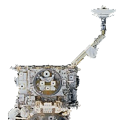

International Space Station (iss)
zenith one truss [z1]
The Z1 truss connects to the top of Node 1. (Unity).

The Z1 truss connects to the top of Node 1. (Unity).
The Zenith One (Z1) Truss Structure was the first external lattice work structure installed the space station. Its main role was to temporarily support the P6 Truss Structure, the first pair of U.S. solar arrays. These provided early power and cooling for the Station until the larger permanent station truss, the Integrated Truss Structure (ITS), was built.
The P6 truss was installed on the top of the Z1 truss in November 2000 and later relocated from to its permanent location on the end of the P5 truss in October 2007.
The Z1 Truss Structure was delivered by U.S. Space Shuttle Discovery STS-92 [Flight 3A] in October, 2000 and installed on top of the U.S. Node 1 (Unity) by the shuttle crew.
The Z1 truss permanently supports the following sub-systems:-
1. Motion Control Sub-system (MCS)
2. Command and Tracking Sub-systems
3. Electrical Power Sub-system
4. Thermal Control Sub-system
5. Extravehicular Activity Sub-system
The Z1 truss houses the motion control sub-system (MCS) which consists of four large gyroscopes called Control Moment Gyros (CMGs) and their assemblies. These control the attitude of the ISS and have a combined spherical momentum storage capability of 14,000 ft-lb/sec.
To maintain the ISS in the desired attitude, the CMG system must cancel, or absorb, the momentum generated by the disturbance torques acting on the Station. When the CMG system saturates, it is unable to generate the torque required to cancel the disturbance torque, which results in the loss of attitude control. Russian segment thrusters are then used to de-saturate the CMGs.
An ISS CMG consists of a large flat wheel that rotates at a constant speed (6,600 rpm) and develops an angular momentum of 3,500 ft-lb/sec about its spin axis. This rotating wheel is mounted in a two-degree-of-freedom gimbal system that can point the spin axis (momentum vector) of the wheel in any direction.
Each CMG has a thermostatically controlled survival heater which kept it within thermal limits before it was activated. The CMGs hardware was activated during U.S. Space Shuttle mission STS-98 [Flight 5A] in February 2001.
This system is primary return link for the Station's video and pay load data transmitted in digital format to the ground. The space-to-ground antenna (SGANT) is attached to the single-beam boom of the current Ku-band antenna.
The Ku-band antenna provides a 50 Mbps fixed-rate down link with up to four video signals or up to 43-Mbps high-rate data with 7 Mbps overhead. There are 12 logical channels, 4 video and 8 pay load, in the Ku-band down link.
The video channels can be configured to down link full-motion video or stop-action video, which consists of skipping video frames. The on-board Ku-band equipment includes a single string of four avionics units; the video baseband signal processor (VBSP), high-rate frame multiplexer (HRFM), high-rate modem (HRM), and the transmit/receive controller (TRC) plus an erectable, steerable antenna.
This system consists of two redundant strings, each of which comprises three on-orbit replaceable units (ORUs) and two antennas, the baseband signal processor (BSP), the Tracking and Data Relay Satellite System (TDRSS) transponder, and the antenna RF group. The RFG unit has two antennas:-
* The high-gain antenna (HGA) which can support the high-rate data link, but it requires TDRSS pointing updates that were not available until Mission 5A.
* The low-gain antenna (LGA) which is fixed in position and needs no pointing data.
The BSP is the heart of the S-band system. It provides data and voice processing for down link and up link. The TDRSS transponder, which arrived on Mission 4A, receives down link information from the BSP and modulates the RF carrier for transmission to the ground.
The Z1 truss assembly has several power distribution components. These include:-
Initialization diode assemblies (IDAs) [2] - provided diode-protected power from the shuttle assembly power conversion unit (APCU) to P6 for module initialization on Mission 4A. They also provided a connection path from P6 to Destiny's DDCUs from Mission 5A until Mission 12A, when the P4 module was delivered.
Secondary power distribution assemblies (SPDAs) [2] - consist of remote power controller modules (RPCMs), power and data connections (central utility rail), and a cold plate. They control, protect, and isolate secondary distribution lines. RPCMs are electronic switches that control, protect, and isolate secondary distribution lines.
DDCUs [2] - were attached to the starboard side of Z1 during the installation mission. The units convert power from primary (115 to 173 volts DC) to secondary (123 to 126 volts DC). They were not activated until Mission 4A, when P6 power came on line.
Plasma contactor units (PCUs) [2] - emit electrons through a self-generated plasma that is self-regulating. The PCUs control the voltage between the space plasma and the Station structure. PCUs mounted on the Z1 truss maintain the structure potential of the Station within 40 volts of the plasma potential. The PCU actively emits when the Station is in sunlight. Without the PCUs, the Station could reach structure potentials of approximately -150 volts.
Patch panels [2] - are on the port side of Z1 to allow the Z1 input power source to be changed. On the outside of the panels are a fixed output and three interchangeable input connectors. To change the panel configuration, an umbilical is simply de-mated and mated to a different connector on the patch panel. The launch configuration of the patch panels provided Russian segment power to Z1 components for keep-alive purposes. The panels were reconfigured during Mission 4A to prepare for the transition to U.S. power via P6.
Z1 includes the following elements of the Early External Active Thermal Control System (EEATCS)
Accumulators [4]
Ammonia
Quick disconnects [12] and associated plumbing.
The accumulators charge the EEATCS with ammonia on orbit, accommodate thermal expansion in the fluid, and maintain the system's operating pressure.
The quick disconnects facilitate the connection of ammonia transfer lines between the P6 truss and Z1 and between Z1 and the Destiny Laboratory.
The Z1 truss segment is equipped with several spacewalk aids:-
* EVA tool stowage devices (ETSDs) [2]
* Work site interface fixtures (WIF) [22]
* A portable foot restraint (PFR) [1]
* Tray launch restraints [2]
* Custom handles [several]
* Standard hand holds and hand rails [numerous] - help EVA crew members move about. Placed in planned paths around sites.
* Camera and laser targets - Camera target on the APAS hatch, a laser target on PMA-3, and laser reflectors on the APAS.
* Flight-releasable grapple fixture (FRGF) [2] - Standard mechanical interfaces between the shuttle's robotic arm and pay loads.
The FRGF can be released during an EVA by rotating two release rods that allow the fixture's grapple shaft to be removed. A spare shaft can be installed on orbit, enabling the interface to be restored to a capture configuration for retrieving pay loads.
Mechanical interfaces are provided as follows:-
* Base of Z1 was attached to top of Node 1. Unity (December 1998)
* Top of Z1 supported the P6 Truss Structure. (November 2000 to October 2007)
* A hinged cable tray on the forward face of Z1 provided a direct interface for power, data, and coolant lines from P6 to the U.S. Destiny Laboratory (February 2001 to October 2007)
* A manual berthing mechanism (MBM) on the forward face of Z1 allowed temporary stowage of Pressurised Mating Adapter 2 (PMA-2) while Destiny was being installed. PMA-2 was then be moved to the front of Destiny for Shuttle docking until Node 2. Harmony was installed in October 2007.
The Z1 truss structure is designed to maximize component packaging and support load paths during launch and on orbit. A solid plate beneath the CMG face provides additional protection from micrometeorites and orbital debris for the CMGs and other Z1 components. The structural framework beam and shell elements are aluminium 2219-T851. The trunnion and keel pin beam elements are INCO 718, and the Ku-band antenna boom beam elements are steel.